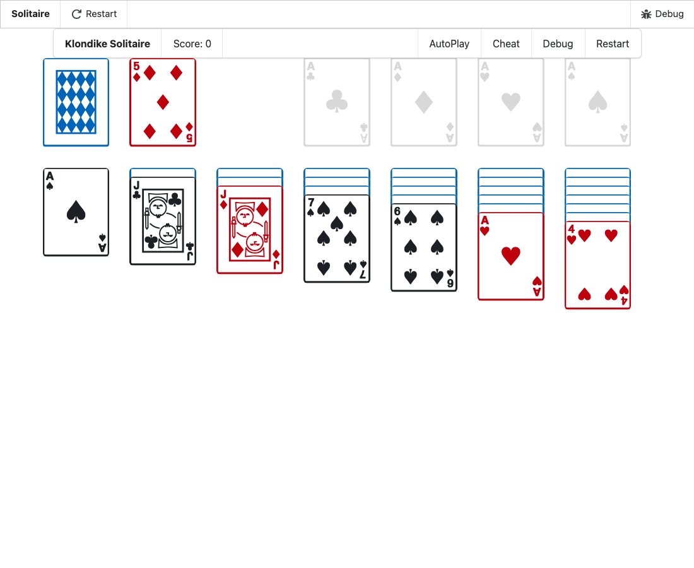

-
In VS Code's main window (the kit's,
spell), open the Explorer (⇧⌘E) and open any file in
spell-app/spaces/@spell/examples/Solitaire/.
-
Open the Command Palette (⇧⌘P) and run:
Spell: Run Project
- Wait for the game to show in the Spell panel.
- Drag the panel's edge to widen it, then narrow it.
- Each card is as wide as its column, and opaque: no card shows through another.
- In each tableau, each card sits a little below the one before.
- As the panel widens and narrows, the cards grow and shrink with it.
